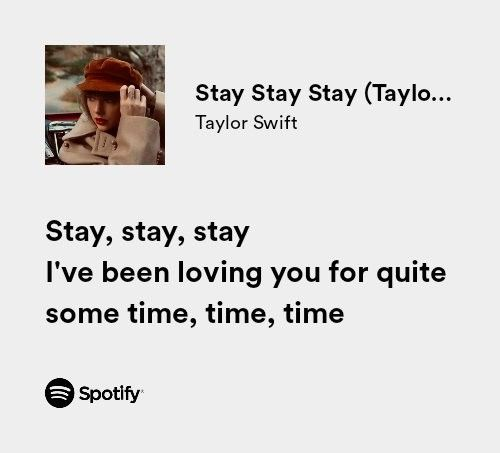
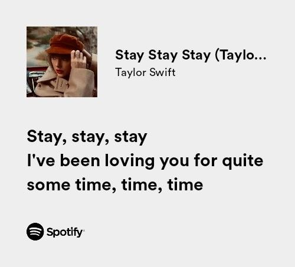

Oi,kym. Desculpa pela ligação de ontem. Não quero ficar me desculpando toda hora, porque não quero dar motivos para isso (não sou ranzinza, juro que essa é minha voz normal). Mas, enfim, criei esse programa pra você. Que tal, a partir de agora, termos ligações só para coisas fofas e filosóficas? Talvez eu não seja o primeiro em muitas coisas na sua vida, mas quem sabe sou o primeiro a fazer um programa especialmente pra você (vou rir muito se não for, skksksks). Ernando 1, pessoas 100. Te amo pra caramba, ativista.Quero estar com vc não só nos momentos bons, mas também nos difÃceis, pq pra mim o amor se fortalece nos desafios. Estar ao seu lado, mesmo quando as coisas ficam complicadas, mostra que o que sentimos é real e prof. Nos dias difÃceis, quero ser o apoio e a presença que você pode contar como eu já havia falado quero está em presente em todos os sentimos do seu painel de controle. Sabe aquela frase do Júlio César? Tem outra “ Veni,vidi,vici†(vim,vi e venci),como Júlio César,vim vi e venci. Mas no meu caso,vim para você,vi em você meu amor e venci ao ter o seu coração. Ainda me ama? Posso tirar suas duvidas?"
â¤ï¸ Quero estar com vc não só nos momentos bons, mas também nos difÃceis, pq pra mim o amor se fortalece nos desafios. Estar ao seu lado, mesmo quando as coisas ficam complicadas, mostra que o que sentimos é real e profundo. Nos dias difÃceis, quero ser o apoio e a presença que você pode contar. Sabe aquela frase do Júlio César? “Veni, vidi, vici†(vim, vi e venci). Mas no meu caso, vim para você, vi em você meu amor e venci ao ter o seu coração. â¤ï¸
🌟 Ainda tem dúvidas que eu te amo? Então vamos tirar essa dúvida. 🌟
🶠Eu escolhi a música "Enchanted" da Taylor Swift para te mostrar o quanto eu te amo porque pra mim ela captura perfeitamente o que sinto por você. Desde o momento em que nos conhecemos, eu me senti como se estivesse vivendo um conto de fadas. Cada momento ao seu lado é mágico e cheio de encanto, e não consigo evitar me sentir maravilhado com a pessoa incrÃvel que você é. A letra dessa música fala sobre a sensação de estar encantado e esperançoso, e é exatamente isso que sinto quando estou com você. ğŸ¶
.jpeg)


👑 Escolhi a música "King of My Heart" da Taylor Swift para expressar o quanto você é especial para mim (nunca vou esquecer quando você me dedicou ela) porque ela representa exatamente o que sinto por você. A música fala sobre encontrar alguém que se torna o "rei" do seu coração, e é exatamente isso que você é para mim, no caso, "rainha". Desde que você entrou na minha vida, você se tornou uma das pessoas mais importantes para mim. Assim como a música celebra um amor verdadeiro e constante, eu sinto que nosso amor é algo raro e precioso, que me dá segurança e alegria. 👑


✨ Agora vou com nossa "Stay Stay Stay" da Taylor que fala sobre a persistência e a determinação em manter um relacionamento (sei que não estamos em nenhum) mesmo quando surgem dificuldades e desentendimentos. A música tem um tom leve e divertido, abordando a ideia de que, apesar das imperfeições e desafios, o amor vale a pena e é importante permanecer juntos. Escolhi essa música para te mostrar o quanto você significa para mim porque ela reflete exatamente o que sinto. A música fala sobre a importância de permanecer juntos, e eu quero continuar ao seu lado, não importa o que aconteça. ✨


 

🌙 Escolhi a música "Midnight" da Taylor Swift porque é um marco especial em nossa história. Foi a primeira vez que eu dediquei uma música a você, e aquele momento será sempre inesquecÃvel para mim. Desde então, cada noite que passamos juntos tem sido uma nova aventura, e a música simboliza o inÃcio de tudo o que vivemos. Agora, ao olhar para trás, tenho a certeza de que cada momento valeu a pena, e nossa jornada tem sido mais incrÃvel do que eu poderia imaginar. Escutei álbuns para ter assunto com você (valeu a pena). Aquela primeira dedicação foi apenas o começo, e eu nunca vou esquecer o quanto foi significativo para mim. Cada instante ao seu lado é precioso, e saber que escolhi você para dedicar essa música só me faz querer voltar no tempo e dedicar mais de mil vezes. 🌙


🵠E por fim, nunca vou esquecer o momento em que ouvimos o álbum "folklore" juntos pela primeira vez. Foi uma experiência incrÃvel e memorável, e eu amei cada minuto, especialmente vendo seu lado e como você reagiu à música. Aquela noite foi especial e a música se tornou uma parte importante da nossa pequena história. Eu quero continuar compartilhando essa paixão por música com você e explorar todos os álbuns da Taylor Swift juntos (mas vamos escutar algum do Kanye um dia também). Cada faixa e cada álbum têm algo único a oferecer, e eu mal posso esperar para vivenciar isso com você. Vamos continuar descobrindo novas músicas e criando memórias. ğŸµ


💖 Você é extraordinária. 💖